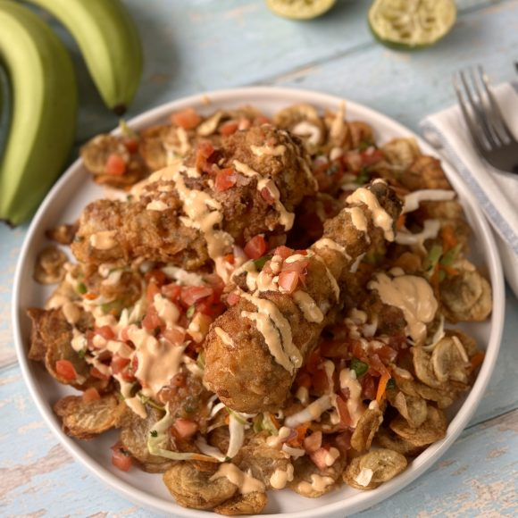

Pollo con Tajadas

Description
This delicious dish is a staple of Honduran cuisine, originating from the department of Cortés, where it's known as pollo chuco.
While it's commonly enjoyed throughout the country, it's often referred to as pollo con tajadas fritas (chicken with fried plantains).
It's worth noting that there are several ways to prepare this dish, including with a salad of purple or regular cabbage, red sauce, white sauce, or chicken broth. Of course, pickles and chili peppers are also common, but the most typical version is fried chicken.
To achieve that delicious crispy texture that characterizes fried chicken, it's important to understand the biggest secret: double-frying.
To do this, preheat the oil to medium-high heat, then fry the breaded chicken, searing both sides, and cook over medium-low heat until cooked through.
Remove the chicken and let it rest for a few minutes. Heat the oil to high heat, return the chicken to the pan for a few more minutes, and you'll get a spectacular result.
Ingredients
- 1 whole chicken breast from Pollos El Cortijo
- 1 clove of garlic
- 1 packet of MAGGI® Chicken Bouillon
- 1 cup of flour
- 1 packet of MAGGI® Flavor and Color
- 1 can of diced jalapeño peppers from Malher
- 3 green bananas
- 1 red onion
- 2 sprigs of cilantro
- 2 lemons
- 2 tomatoes
- 1 green chili pepper
- 1 cup of mayonnaise
- 1 tablespoon of sugar
- ¾ cup of mustard
- Salt and pepper to taste
- ¼ head of cabbage
- ½ yellow onion
- Broth as needed chicken
- w/n cilantro
Steps
- Clean the chicken breasts from Pollos El Cortijo. Finely chop the garlic and mix with ½ packet of MAGGI® Chicken Broth, 1 teaspoon of oregano, 1 tablespoon of mustard, salt, and pepper. Season the chicken with the mixture and set aside. Let marinate for a minimum of 2 hours in the refrigerator.
- To make the pickle: Slice the red onion into julienne strips, squeeze in lemon juice, add salt and pepper, and add diced Malher jalapeño peppers to taste. Finely chop the cilantro and adjust the seasoning. Set aside.
- Chop the cabbage and blanch it in boiling water. Peel the green bananas and cut them into slices, then fry them in plenty of hot oil.
- For breading the chicken: In a bowl, mix the flour with MAGGI® Flavor and Color. Coat the chicken breast in the flour mixture, removing any excess. Fry for approximately 15 to 20 minutes over medium-low heat.
- To make the sauce: roast the yellow onion, tomato and green chili, blend everything with chicken broth to the desired thickness, strain and sauté the sauce for about 10 minutes.
- To make the dressing: Blend the mayonnaise, ¼ cup of mustard, 1 teaspoon of chopped yellow onion and add sugar to taste, adjust salt.
- Serve the pollo chuco, placing first the fried plantain slices, cabbage, chicken, sauce, pickle and dressing.
Home